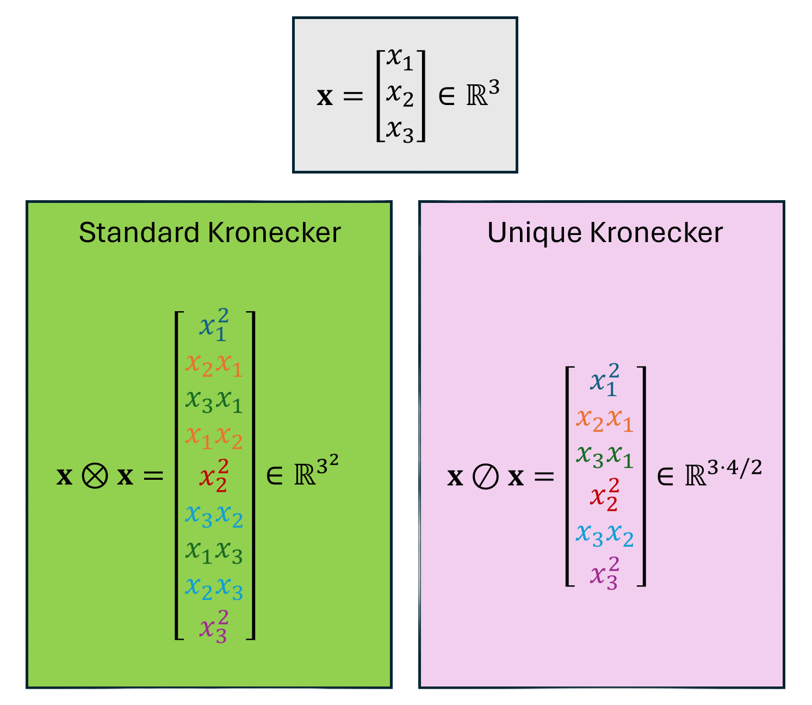
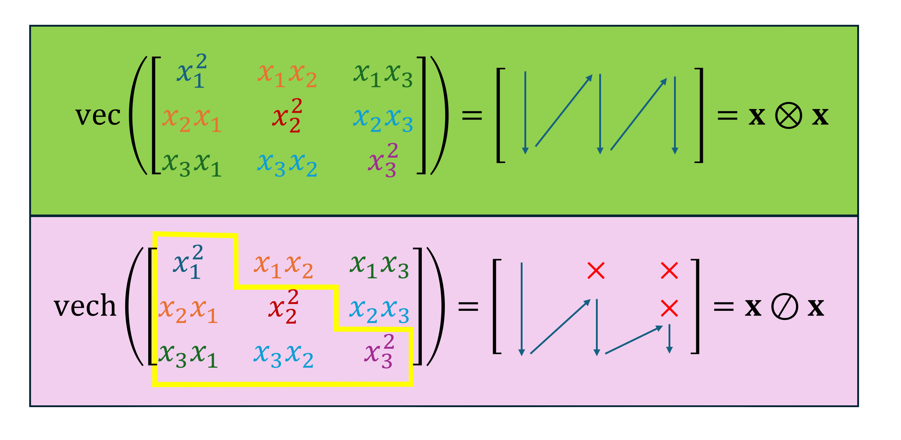

Unique Kronecker Product
Introduction
The unique Kronecker product is a math operation which is similar to the Kronecker product but eliminates all the redundant terms appearing due to terms invariant under index permutations. This is easiest to understand through an example.
The example above shows the unique Kronecker product for a vector of $\mathbf{x}\in\mathbb{R}^3$. For a standard Kronecker product the resulting vector becomes a 9-dimensional vector, and we have a 6-dimensional vector when using the unique Kronecker product. Which shows how the unique Kronecker product eliminates 3 of the redundant terms.
Definitions
We define the basic syntax for the general Kronecker product and unique Kronecker product of order $k$ as follows:
\[\begin{align} \mathbf{x}^{[k]} &= \underbrace{\mathbf{x} \otimes \cdots \otimes \mathbf{x}}_{k-\text{times}} \in \mathbb{R}^{n^k}, \\ \mathbf{x}^{\langle k \rangle} &= \underbrace{\mathbf{x} \oslash \cdots \oslash \mathbf{x}}_{k-\text{times}} \in \mathbb{R}^{\binom{n+k-1}{k}} \end{align}\]
math
where $\mathbf{x}\in\mathbb{R}^n$. From this definition, we observe that the dimensions of the Kronecker product grows in the order of $n^k$ but the unique Kronecker grows in the order of $\binom{n+k-1}{k}$. The reduction in computational cost from this order difference becomes significantly obvious in higher-dimensions.
For a second-order Kronecker product, the package supports the following syntax
julia> using UniqueKroneckerjulia> n = 33julia> x = rand(n)3-element Vector{Float64}: 0.6025825631767272 0.08676884523472372 0.8647768808079053julia> x2u = x ⊘ x # or unique_kronecker(x,x)6-element Vector{Float64}: 0.3631057454446344 0.052285393165424576 0.5210994694132026 0.007528832503367438 0.07503569133338826 0.74783905357985
for higher-order Kronecker products, you can do
julia> using UniqueKroneckerjulia> n = 33julia> k = 55julia> x = rand(n)3-element Vector{Float64}: 0.6530667914684873 0.24522915108870258 0.3523360133514144julia> xku = ⊘(x, k)21-element Vector{Float64}: 0.11879222093346563 0.04460694660334917 0.06408958178189245 0.016750084051282282 0.024065890257048604 0.034576965231405486 0.006289722500395392 0.00903683653039443 0.012983786561638856 0.018654615795162095 ⋮ 0.004875462966457146 0.007004881667688114 0.010064350301889286 0.0008868710401489301 0.0012742229268243453 0.001830755536872809 0.0026303606419510626 0.0037792031581362832 0.0054298168405809725
Another concept we need to define is the vectorization and half-vectorization operators $\mathrm{vec}(\cdot)$ and $\mathrm{vech}(\cdot)$, respectively. The vectorization operator flattens a matrix $\mathbf{A}\in\mathbb{R}^{m\times n}$ in the column direction creating a vector of size $mn$. On the other hand, the half-vectorization operator vectorizes the matrix but only half of it or discarding the supradiagonal entries. These operations are strongly related to the second-order Kronecker and unique Kronecker products, and those relationships are described in the picture below.
The vectorization operator is already defined in the LinearAlgebra package as the function vec, but we define the functions vech for the half-vectorization operator and invec function for the inverse-vectorization operator that reverses the vectorization.
We are aware that similar concepts exists in the tensor algebra literature, and the vectorization and half-vectorization operations can be generalized to higher-order Kronecker products. However, for ease of exposition, we only illustrate the second-order Kronecker product case.
Columnwise Operation on Snapshot Matrices
We also employ the functions
kron_snapshot_matrixunique_kron_snapshot_matrix
which allows you to apply the Kronecker product and unique Kronecker product on each column of a matrix. For example
julia> using UniqueKroneckerjulia> X = [1 2; 3 4]2×2 Matrix{Int64}: 1 2 3 4julia> X2 = kron_snapshot_matrix(X, 2)4×2 Matrix{Int64}: 1 4 3 8 3 8 9 16
julia> using UniqueKroneckerjulia> X = [1 2; 3 4]2×2 Matrix{Int64}: 1 2 3 4julia> X2u = unique_kron_snapshot_matrix(X, 2)3×2 Matrix{Int64}: 1 4 3 8 9 16
UniqueKronecker.unique_kronecker — Functionunique_kronecker(x::AbstractVector{T}, y::AbstractVector{T}) where TUnique Kronecker product operation. For example, if
\[x = y = \begin{bmatrix} 1 \\ 2 \end{bmatrix}\]
then
\[\mathrm{unique_kronecker}(x, x) = \begin{bmatrix} 1 \\ 2 \\ 4 \end{bmatrix}\]
Arguments
x::AbstractVector{T}: vector to perform the unique Kronecker producty::AbstractVector{T}: vector to perform the unique Kronecker product
Returns
result: unique Kronecker product
Note
This implementation is faster than unique_kronecker_power for p = 2.
unique_kronecker(x::AbstractVector{T}, y::AbstractVector{T}, z::AbstractVector{T}) where TUnique Kronecker product operation for triple Kronecker product.
Arguments
x::AbstractVector{T}: vector to perform the unique Kronecker producty::AbstractVector{T}: vector to perform the unique Kronecker productz::AbstractVector{T}: vector to perform the unique Kronecker product
Returns
result: unique Kronecker product
Note
This implementation is faster than unique_kronecker_power for p = 3.
unique_kronecker(x::AbstractVector{T}, y::AbstractVector{T}, z::AbstractVector{T}, w::AbstractVector{T}) where TUnique Kronecker product operation for quadruple Kronecker product.
Arguments
x::AbstractVector{T}: vector to perform the unique Kronecker producty::AbstractVector{T}: vector to perform the unique Kronecker productz::AbstractVector{T}: vector to perform the unique Kronecker productw::AbstractVector{T}: vector to perform the unique Kronecker product
Returns
result: unique Kronecker product
Note
This implementation is faster than unique_kronecker_power for p = 4.
UniqueKronecker.:⊘ — Function⊘(x::AbstractVector{T}, y::AbstractVector{T}) where TUnique Kronecker product operation
Arguments
x::AbstractVector{T}: vector to perform the unique Kronecker producty::AbstractVector{T}: vector to perform the unique Kronecker product
Returns
- unique Kronecker product
⊘(x::AbstractArray{T}...) where {T<:Number}Generalized Kronecker product operator for multiple vectors.
Arguments
x::AbstractArray{T}...: one or more vectors to perform the unique Kronecker product
Returns
- unique Kronecker product of all vectors
UniqueKronecker.kron_snapshot_matrix — Functionkron_snapshot_matrix(Xmat::AbstractArray{T}, p::Int) where {T<:Number}Take the p-order Kronecker product of each state of the snapshot matrix Xmat.
Arguments
Xmat::AbstractArray{T}: state snapshot matrixp::Int: order of the Kronecker product
Returns
- kronecker product state snapshot matrix
UniqueKronecker.unique_kron_snapshot_matrix — Functionunique_kron_snapshot_matrix(Xmat::AbstractArray{T}, p::Int) where {T<:Number}Take the p-order unique Kronecker product of each state of the snapshot matrix Xmat.
Arguments
Xmat::AbstractArray{T}: state snapshot matrixp::Int: order of the Kronecker product
Returns
- unique kronecker product state snapshot matrix